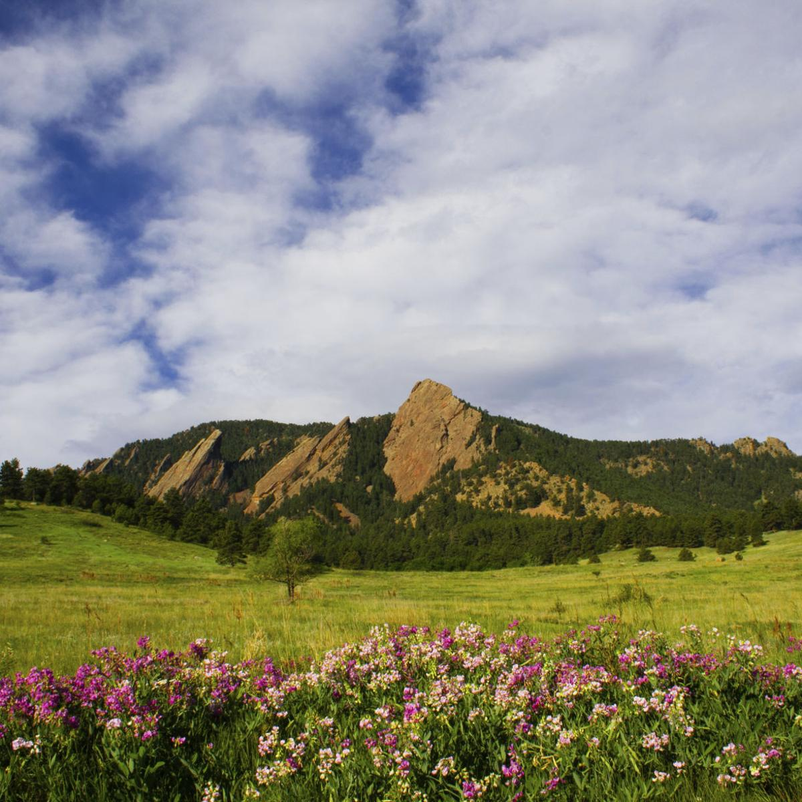

There are lots of beautiful mountains accessible to Boulder
for all levels of hikers. The top ranked trails in Boulder
follow as Wonderland Lake Loop Trail, Flatirons Vista,
Chapman Drive and Tenderfoot Trail,
Rattlesnake Gulch,
Mount Sanitas, Green Mountain West Trail, Red Rocks Trail,
and the Flatirons Loop

The Flatirons, Chataqua Park Boulder CO